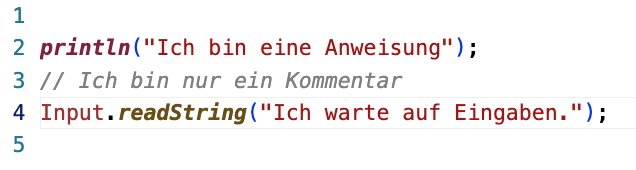
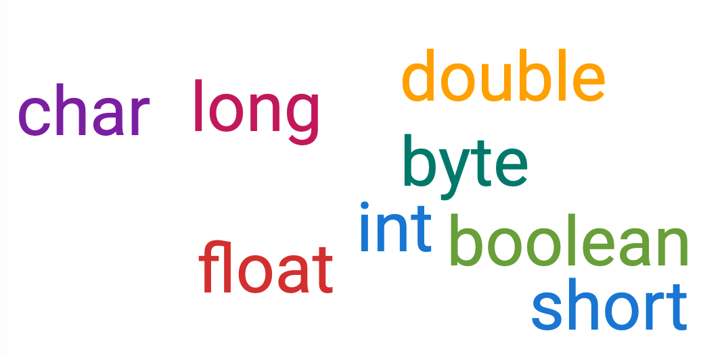
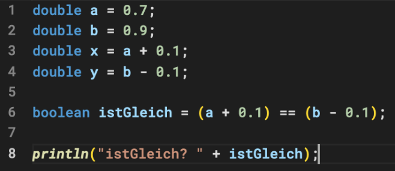
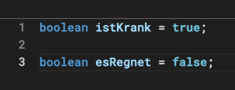
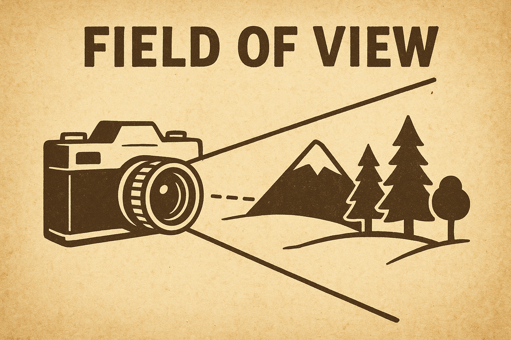

| Typ | Speichergröße | Wertebereich |
|---|---|---|
byte |
8 Bit | -128 bis 127 |
short |
16 Bit | -32 768 bis 32 767 |
int |
32 Bit | ca. -2 Mrd. bis +2 Mrd. |
long |
64 Bit | sehr großer Bereich |
Hinweis
int ist der Standard-Typ für ganze Zahlen.
| Typ | Speichergröße | Genauigkeit | Beispiel |
|---|---|---|---|
float |
32 Bit | ca. 6–7 Stellen | 3.14f |
double |
64 Bit | ca. 15 Stellen | 3.14159265358979 |
Hinweis
double ist der Standard-Typ für Gleitkommazahlen.
Warnung
Passen Sie beim Vergleich von Gleitkommazahlen gut auf (siehe folgendes Beispiel)!

Wir verwenden char für Uni-Code Zeichen:
char buchstabeGross = 'A';
char buchstabeKlein = 'a';
char symbol = '♬';

Variablen sind Container (Platzhalter) für typisierte Inhalte
Diese Inhalte können sein:
Datentyp Bezeichner = Initialwert;
Hinweis
In Java gibt es keine Ganzzahl-Typen, die nur positive Werte annehmen dürfen.
Konventionen:
int 1value
int $id
boolean class
double VAL
int userAge
double accountBalance
String id2name[]
price statt p, counter statt cid, url)Hinweis
Wird eine Variable definiert, so kann man diese optional mit einem Wert initialisieren. Das ist auch grundsätzlich zu empfehlen, damit die Variable einen definierten (initialen) Wert erhält. Dieser Wert lässt sich in der Regel auch später durch eine Zuweisung noch überschreiben.
Bei komplexen (nicht primitiven) Datentypen wird der Unterschied zwischen Zuweisung und Initialisierung später noch eine große Rolle spielen.
Beispiel:
int a = 1;
→ a wird hier mit Wert 1 initialisiert
int a;
a = 1;
→ a wird hier nicht initialisiert; der Wert 1 wird aber später zugewiesen.
Eine Zuweisung = ist nicht das Gleiche wie ein Vergleich ==
Beispiel:
a == b → liefert true/false
a = b → Variable a wird mit Wert von b überschrieben

Der horizonale Bildwinkel wird mit folgender Formel bestimmt: \[ \text{Bildwinkel} = 2 * \arctan\left(\frac{\text{Sensorbreite}}{2 * \text{Brennweite}}\right) \]
Hinweis
Das Ergebnis ist der Bildwinkel in Rad. Zur Umrechnung in ° muss der Wert mit \(\frac{180}{\pi}\) multipliziert werden.
Gegeben sei eine Sensorbreite von 36 mm (Vollformat) und 14 mm Brennweite (Weitwinkel). Berechnen Sie das horizontale Sichtfeld in °!